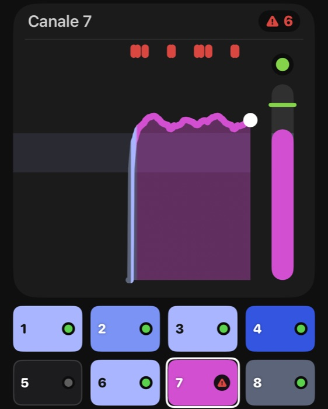
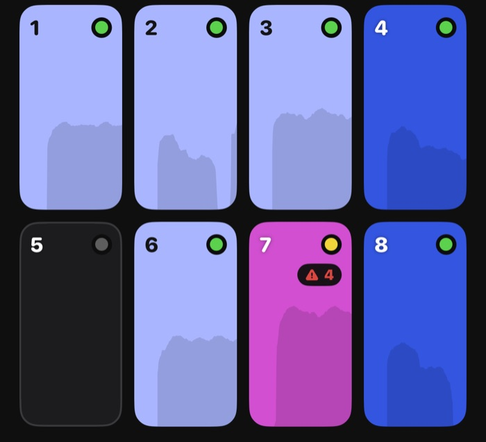
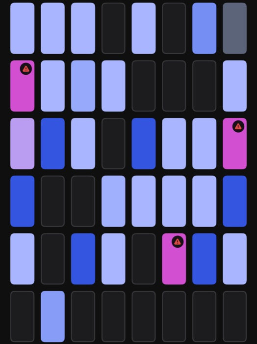
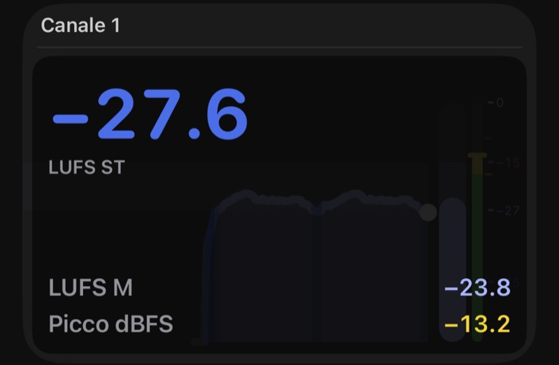

suns
Registratore multitraccia per iPhone e iPad, da schede e mixer USB class compliant. [ beta in arrivo ]
Attacchi il telefono a una scheda audio o a un mixer USB multicanale class compliant (quelli che vanno senza driver), premi Registra, e ogni canale finisce nel suo file. Da 1 a 64 canali. Tu intanto guardi i colori e sai subito se sta andando bene o se qualcuno sta urlando.
La beta su TestFlight sta per partire: quando è pronta, qui compare il modo di provarla.
l'idea
Capire al volo, dai colori, come sta andando la registrazione. Le misure principali sono due:
- Picco (in dBFS): ti dice se il segnale è andato fuori scala. È il LED. Se tocca il soffitto (0 dBFS) il triangolo del clip diventa rosso e conta quante volte è successo.
- Loudness (in LUFS): ti dice quanto suona forte, più o meno come lo sente l'orecchio. È il colore del canale.
Che tu abbia spazio per un grafico, per una mattonella o solo per una pillola, vedi sempre queste due misure, con l'avviso del clip.



il picco: lì c'è uno standard
Per il LED scegli la scala: Semplice (la nostra: verde ok, giallo da −6 dBFS, rosso da −1 dBFS, cioè sei al limite) oppure gli standard dei broadcaster, EBU o SMPTE. Il clip invece non si discute: è quando il segnale tocca il massimo (0 dBFS). Il triangolo è grigio con uno 0 finché va tutto bene; se c'è un clip diventa rosso con il numero, e un tocco lo azzera.
la loudness: qui non c'è giusto o sbagliato
Quanto forte registrare dipende da cosa fai: una voce in studio non è un concerto dal mixer. Quindi di partenza il colore non ti dice "bene" o "male": va dal blu (piano) al magenta (forte) in un'unica sfumatura, e distingue il silenzio dal rumore di fondo.
Modo Continua (di partenza): dal blu al magenta, nessuna zona giusta o sbagliata.
Se invece hai un obiettivo preciso, passa al modo Target: scegli una fascia di volume, oppure lascia che suns la tari sulla tua voce in 10 secondi, e il colore ti dice se la stai seguendo.
Blu sotto il target, lilla dentro, magenta sopra. Il preset "Podcast" va da −27 a −15 LUFS; ci sono anche "Microfono integrato" e "Mixer live", e puoi regolarla a mano. Si cambia in Impostazioni › Misure › Colori loudness.
e se sei affezionato ai numeri
Ci sono anche quelli: tocca il grafico. Qui con la vista Fonico (il meter di picco al posto del LED) e la scala EBU.

cosa fa
- Un WAV a 24 bit per canale: li apri in qualsiasi programma di montaggio.
- Fino a 64 canali, dalla schedina a 2 ingressi al mixer grosso. Anche con il microfono del telefono.
- Registra a schermo bloccato, e la vedi sulla schermata di blocco. Al 20 % e al 10 % di batteria ti avvisa, anche sulla schermata di blocco.
- Prima di partire: premendo Registra ti ricorda le cose che fermano una ripresa (modalità aereo con il Wi-Fi spento, sveglie, telefono in carica).
- Se una telefonata o una sveglia ferma la ripresa, chiude i file e riparte da sola in una nuova ripresa dello stesso progetto (si spegne in Evita le interruzioni › Riparti da solo).
- Se il telefono fa fatica a scrivere, te lo dice prima che si perda qualcosa; se perde dei campioni, te lo dice subito.
- Marker e una scaletta da spuntare: ogni punto spuntato è un marker.
- Progetti e riascolto con i marker, anche dal nome del progetto: "Riascolta l'ultima ripresa".
- Niente account, niente cloud: è tutto sul tuo telefono, nell'app File.
- Se ti perdi: Impostazioni › Consigli e aiuto › Non so da dove partire.
il reparto esperimenti
In Impostazioni › Sperimentali c'è la roba ancora in prova. Usala, ma senza fidarti troppo:
- Formato di registrazione: oltre al WAV 24 bit, WAV 16 bit, ALAC (senza perdita) e AAC (occupa pochissimo). Ma attenzione: in ALAC e AAC, se l'app si chiude di colpo, la ripresa può sparire tutta. Per questo, se la batteria scende al 5 % (fuori carica), suns si ferma da sola e salva i file.
- Esportazione (da attivare con "Abilita esportazione"): un progetto o una ripresa in un file ZIP, in WAV, ALAC o AAC. Con le riprese lunghe ci mette un po'.
- Prova di carico: fa registrare al telefono una demo con tanti canali e ti dice se regge, quanto scalda e quanta batteria si mangia.
- Ripara le riprese interrotte: se l'app si chiude di colpo durante una ripresa in WAV, alla riapertura sistema i file.
su cosa gira
- iPhone o iPad con iOS 27. Più vecchio? Per ora niente. Su iPhone sta in verticale, su iPad gira in tutte le direzioni.
- Schede e mixer USB class compliant ("senza driver"). Provata con UMC202HD, XR18 e X32; un iPhone SE del 2020 si è fatto 18 canali per 40 minuti senza perdere un campione.
- Con la presa Lightning serve ovviamente un adattatore USB.
- Su un iPad vero non l'ho mai provata.
beta in arrivo
suns è in beta: per ora la provano in pochi. Quando la beta si apre a più persone, il link per installarla con TestFlight comparirà qui.
Intanto, se hai domande o una scheda da provare: support@savut.eu.